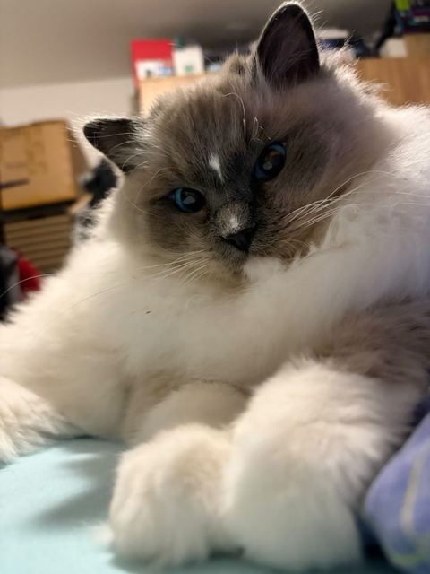

Unsere Arbeit
Bildung, Gesundheitstests und Sozialisierung — die drei Säulen, auf denen unsere gesamte Zucht steht.
Bildung
2025 habe ich einen Kurs für Katzengenetik am Campus Felinarium absolviert — ein siebenwöchiges Programm zu Genetik, Gesundheit und verantwortungsvoller Zucht.
Gesundheitstests
Alle unsere Zuchtkatzen werden genetisch auf HCM und PKD getestet, außerdem auf FeLV und FIV. HCM kontrollieren wir zusätzlich per Herzultraschall.
Leider kann HCM trotz negativem Gentest später trotzdem auftreten. Auch der Gentest auf PKD prüft nur auf eine verbreitete Mutation und schließt andere Nierenerkrankungen nicht aus — das sollte man bedenken.
Sozialisierung
Die Kätzchen wachsen in unserem Zuhause mit Kindern auf und sind an den gewöhnlichen Haushaltsalltag gewöhnt.
Zuchtstandard
Wir halten uns an den Rassestandard der Ragdoll. Ziel sind schöne, typvolle Kätzchen, die vor allem für die weitere Zucht geeignet sind — deshalb ist die Auswahl unserer Zuchttiere so entscheidend.
Gesunde Eltern, ausgeglichene Kätzchen
Die Investition in Genetik und Sozialisierung zeigt sich in jedem Kätzchen, das uns in ein neues Zuhause verlässt.
HCM- & PKD-Tests
Gentests auf HCM und PKD macht jede unserer Kätzinnen vor ihrem ersten Wurf, HCM kontrollieren wir zusätzlich regelmäßig per Herzultraschall. Leider ist eine Katze mit Stammbaum keine Garantie für lebenslange Gesundheit — aber wir tun unser Möglichstes dafür.
FeLV- & FIV-Tests
FeLV (Katzenleukose) und FIV (Katzen-Immunschwäche) sind schwere, unheilbare Viruserkrankungen, die zwischen Katzen übertragen werden. Wir testen darauf, um die gesamte Zucht und neue Besitzer zu schützen.
Sozialisierung mit Kindern
Unsere Kätzchen wachsen mitten im ganz normalen Alltagstrubel auf — sie sind an alle Geräusche des Haushalts sowie an Kinder um sie herum gewöhnt. So erkennen wir auch, welches Kätzchen sensibler und welches mutig und furchtlos ist.
Trotzdem kann sich jedes Kätzchen in einer neuen Umgebung anders verhalten — dass es mit Kindern aufgewachsen ist, heißt nicht, dass es ein neues Zuhause sofort annimmt. Es sind immer noch kleine Kätzchen ohne Mutter und Geschwister in einer fremden Umgebung — deshalb ist es so wichtig, unsere Hinweise für eine gute Eingewöhnung zu befolgen.
Zuchtstandard
Uns geht es nicht darum, Kätzchen nur als Haustiere zu produzieren. Wir wählen unsere Zuchttiere sorgfältig nach Typ, Gesundheit und Wesen aus und wählen sie aus bewährten Zuchtstätten von Weltklasse. Uns ist wichtig, dass die Kätzchen nicht nur schön, sondern bei Bedarf auch für die weitere Zucht geeignet sind.
Unsere Kätzchen in ihren neuen Familien
Fotos und Nachrichten, die uns neue Besitzer schicken — ein schöner Beweis, dass sich unsere Arbeit an Sozialisierung und Gesundheit auch lange nach dem Auszug des Kätzchens auszahlt.

Dieses Foto hat uns die neue Besitzerin eines unserer Kätzchen geschickt — ein schöner Beweis, dass sich unsere Arbeit an Sozialisierung und Gesundheit auch lange nach dem Auszug des Kätzchens auszahlt.